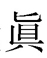

支那に於ける新文學の始から今までの間の年月はまださう永くなかつた。始の時には矢張バルカン、諸国に於けるが如く大抵創作者も譯者や文學革新運動戰鬬者の役を勤めて居たが今になつこ稍々分れこ來た。併しその爲め一部分の所謂作者の吞氣さを增長した點から云へぼ頗る不幸な事である。
一般に云ふと現今の作者は書く事の不自由の點を别としても實に困難た境遇に置かれて居る。第一、新文學は外國の文學潮流に動かされて發生したのだから自國の古い文學から遺產として取るべきものは殆んど無かつた。第二、外國文學の譯物も少々あるけれども全集や傑作なく所謂“他山の石”となれるものは實に貧乏なものごあつた。
併し就中短篇小說の成績は割合に良い方に屬して居る。無論傑作と云ふ程のものはないけれども此頃流行して居る外國人の書いた支那の事を取ふ處の創作よりは必ず劣つて居るとも言へない。その實の點に至つては寧ろすぐれて居るのである。外國の讀者から見れば本當でないらしい處が隨分あるかも知れないが、併しそれは大抵

實である。今度、自分の淺陋をも顧みないで最近的作者の短篇小說を選出して日本へ紹介するてとになつたが——若し無な仕事に終らなかつたならば誠に莫大な幸である。一九三六年四月三十日鲁迅
〔译文〕
中国的新文学，自始至今，所经历的年月不算长。初时，也像巴尔干各国一样，大抵是由创作者和翻译者来扮演文学革新运动战斗者的角色，直到今天，才稍有区别。但由此而增长了一部分所谓作者的马虎从事。从这点看来，是颇为不幸的。
一般说，目前的作者，创作上的不自由且不说，连处境也着实困难。第一，新文学是在外国文学潮流的推动下发生的，从中国古代文学方面，几乎一点遗产也没摄取。第二，外国文学的翻译极其有限，连全集或杰作也没有，所谓可资“他山之石”[733]的东西实在太贫乏。
但创作中的短篇小说是较有成绩的，尽管这些作品还称不上什么杰作，要是比起最近流行的外国人写的，以中国事情为题材的东西来，却并不显得更低劣。从真实这点来看，应该说是很优秀的。在外国读者看来，也许会感到似有不真实之处，但实际大抵是真实的。现在我不揣浅陋，选出最近一些作者的短篇小说介绍给日本。——如果不是徒劳无益的话，那真是莫大的幸运了。
鲁迅
一九三六年四月三十日
注 释
[732] 本篇最初发表于1936年6月1日日本《改造》月刊第十八卷第六号，原为日文，无标题。
1936年春，鲁迅应日本改造社社长山本实彦的要求，选出中国青年作家短篇小说十篇，从同年6月起，在《改造》月刊“中国杰作小说”总题下陆续发表（只发表了六篇）。
[733] “他山之石” 语出《诗经·小雅·鹤鸣》：“它山之石，可以为错”；“它山之石，可以攻玉”。